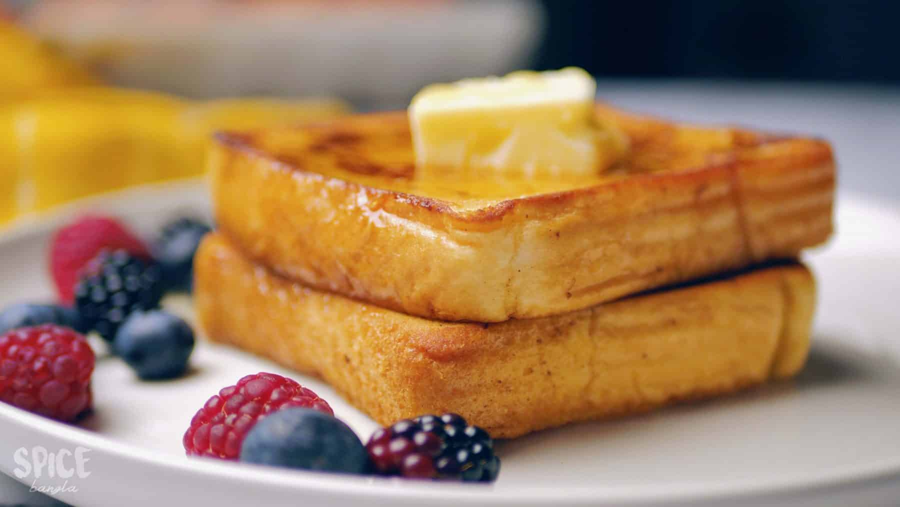

Return to main page
Classic French Toast Recipe

French Toast is breakfast meal that is crispy on the outside, and custardy in the inside.
Custard Ingredient
- 1 ½ cups whole milk
- 2 large eggs
- 3-4 Tbsp granulated white sugar
- 1-2 tsp real vanilla extract
- 1/2 tsp ground cinnamon
- 1/2 tsp nutmeg
What you need to do:
- in a large bowl combine 1 1/2 cups of whole milk, 2 large eggs, 3-4 tablespoons of granulated white sugar, 1-2 teaspoons of real vanilla extract, and ½ teaspoon each of ground cinnamon and nutmeg.
- Whisk together until combined and no streaks of egg remain.
- Once the custard is ready, pour it into a cake pan or pie plate. Grab a piece of thickly cut bread and drop it into the custard, letting it sit for 20-30 seconds on each side.
- Heat 2 tablespoons of melted butter in a non-stick skillet over medium heat. Add the soaked bread to the skillet and let the bread fry for 3-5 minutes on each side, until golden brown.
- Once every piece of toast is complete, stack on a plate, topped with butter and maple syrup.
Return to main page